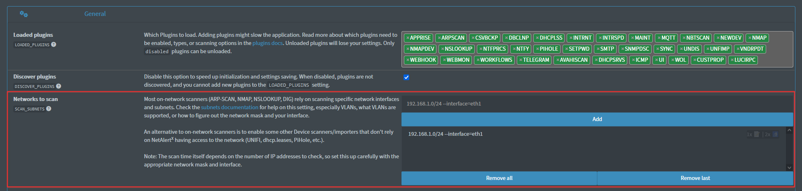

Subnets Configuration
You need to specify the network interface and the network mask. You can also configure multiple subnets and specify VLANs (see VLAN exceptions below).
ARPSCAN can scan multiple networks if the network allows it. To scan networks directly, the subnets must be accessible from the network where NetAlertX is running. This means NetAlertX needs to have access to the interface attached to that subnet.
Warning
If you don't see all expected devices run the following command in the NetAlertX container (replace the interface and ip mask):
sudo arp-scan --interface=eth0 192.168.1.0/24
If this command returns no results, the network is not accessible due to your network or firewall restrictions (Wi-Fi Extenders, VPNs and inaccessible networks). If direct scans are not possible, check the remote networks documentation for workarounds.
Example Values
Note
Please use the UI to configure settings as it ensures the config file is in the correct format. Edit app.conf directly only when really necessary.

- Examples for one and two subnets:
- One subnet:
SCAN_SUBNETS = ['192.168.1.0/24 --interface=eth0'] - Two subnets:
SCAN_SUBNETS = ['192.168.1.0/24 --interface=eth0','192.168.1.0/24 --interface=eth1 --vlan=107']
Tip
When adding more subnets, you may need to increase both the scan interval (ARPSCAN_RUN_SCHD) and the timeout (ARPSCAN_RUN_TIMEOUT)as well as similar settings for related plugins.
If the timeout is too short, you may see timeout errors in the log. To prevent the application from hanging due to unresponsive plugins, scans are canceled when they exceed the timeout limit.
To fix this:
- Reduce the subnet size (e.g., change /16 to /24).
- Increase the timeout (e.g., set ARPSCAN_RUN_TIMEOUT to 300 for a 5-minute timeout).
- Extend the scan interval (e.g., set ARPSCAN_RUN_SCHD to */10 * * * * to scan every 10 minutes).
For more troubleshooting tips, see Debugging Plugins.
Explanation
Network Mask
Example value: 192.168.1.0/24
The arp-scan time itself depends on the number of IP addresses to check.
The number of IPs to check depends on the network mask you set in the
SCAN_SUBNETSsetting.
For example, a/24mask results in 256 IPs to check, whereas a/16mask checks around 65,536 IPs. Each IP takes a couple of seconds, so an incorrect configuration could makearp-scantake hours instead of seconds.
Specify the network filter, which significantly speeds up the scan process. For example, the filter 192.168.1.0/24 covers IP ranges from 192.168.1.0 to 192.168.1.255.
Network Interface (Adapter)
Example value: --interface=eth0
The adapter will probably be eth0 or eth1. (Check System Info > Network Hardware, or run iwconfig in the container to find your interface name(s)).
Tip
As an alternative to iwconfig, run ip -o link show | awk -F': ' '!/lo|vir|docker/ {print $2}' in your container to find your interface name(s) (e.g.: eth0, eth1):
Synology-NAS:/# ip -o link show | awk -F': ' '!/lo|vir|docker/ {print $2}'
sit0@NONE
eth1
eth0
VLANs
Example value: --vlan=107
- Append
--vlan=107to theSCAN_SUBNETSfield (e.g.:192.168.1.0/24 --interface=vmbr0 --vlan=107) for multiple VLANs.
VLANs on a Hyper-V Setup
Community-sourced content by mscreations from this discussion.
Tested Setup: Bare Metal Hyper-V on Win Server 2019 Ubuntu 22.04 VM Docker NetAlertX.
Approach 1 (may cause issues):
Configure multiple network adapters in Hyper-V with distinct VLANs connected to each one using Hyper-V's network setup. However, this action can potentially lead to the Docker host's inability to handle network traffic correctly. This might interfere with other applications such as Authentik.
Approach 2 (working example):
Network connections to switches are configured as trunk and allow all VLANs access to the server.
By default, Hyper-V only allows untagged packets through to the VM interface, blocking VLAN-tagged packets. To fix this, follow these steps:
- Run the following command in PowerShell on the Hyper-V machine:
Set-VMNetworkAdapterVlan -VMName <Docker VM Name> -Trunk -NativeVlanId 0 -AllowedVlanIdList "<comma separated list of vlans>"
- Within the VM, set up sub-interfaces for each VLAN to enable scanning. On Ubuntu 22.04, Netplan can be used. In /etc/netplan/00-installer-config.yaml, add VLAN definitions:
network:
ethernets:
eth0:
dhcp4: yes
vlans:
eth0.2:
id: 2
link: eth0
addresses: [ "192.168.2.2/24" ]
routes:
- to: 192.168.2.0/24
via: 192.168.1.1
- Run
sudo netplan applyto activate the interfaces for scanning in NetAlertX.
In this case, use 192.168.2.0/24 --interface=eth0.2 in NetAlertX.
VLAN Support & Exceptions
Please note the accessibility of macvlans when configured on the same computer. This is a general networking behavior, but feel free to clarify via a PR/issue.
- NetAlertX does not detect the macvlan container when it is running on the same computer.
- NetAlertX recognizes the macvlan container when it is running on a different computer.